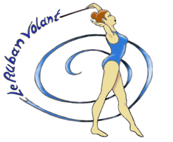

Le Ruban Volant

Comme vous devez le savoir, les JO 2024 de Paris sont prévus pour bientôt.
C'est pourquoi, récemment, les Championnats mondiaux de GR ont été organisés à Valence en Espagne
Parmis les gymnastes présentes, de nombreuses nouvelles têtes ont été aperçues. Comme par exemple l'allemande
Darja Varfolomeev qui a remporté cinq médailles d'or pour cinq engins. Etant née en 2006, elle vient d'entrer dans la catégorie Senior. Ce qui explique pourquoi on ne l'avait pas souvent vue avant.
Autre que Darja, des gymnastes qu'on a vu apparaître plus souvent ont encore fait leurs preuves.
Montrant à nouvelle fois que le travail paye et qu'elles ne se feront pas oublier de sitôt.
Je pense notamment à Viktoriia Onopriienko. Une gymnaste Ukrainienne qui a déjà participé aux derniers JO en 2021, mais qui a réussi à décrocher la médaille d'argent au ruban à Valence.
Son score total s'élevait à 96.800. Elle est donc qualifiée pour les JO de 2024.
On a égalemment pu apercevoir Stiliana Nikolova, qui s'est également qualifié pour les JO. Ainsi que Sofia Raffaeli, qui est revenue en force, se qualifiant également.
Pour représenter la France aux JO, on peut compter sur Helène Karbanov, qui s'est qualifiée en décrochant la 13ème place. Avec un score de 94.900. Malheuresement, notre
deuxième française, Maëlle Millet a été éliminée...
Du côté des équipes, la Chine se place première, suivie de près par l'Israël et la Bulgarie. De quoi faire
parler les plus engagés... Mais ne mélangeaons pas sport et politique tout de même.
Ces informations sont valables pour le Championnat Junior qui a lieu cette année. Les sélections pour les JO ne
se sont pas déroulées de la meme manière que pour les gymnastes individuelles.
Pour ma part, j'ai énormément apprécié l'enchaînement au ballon de l'équipe israélienne.